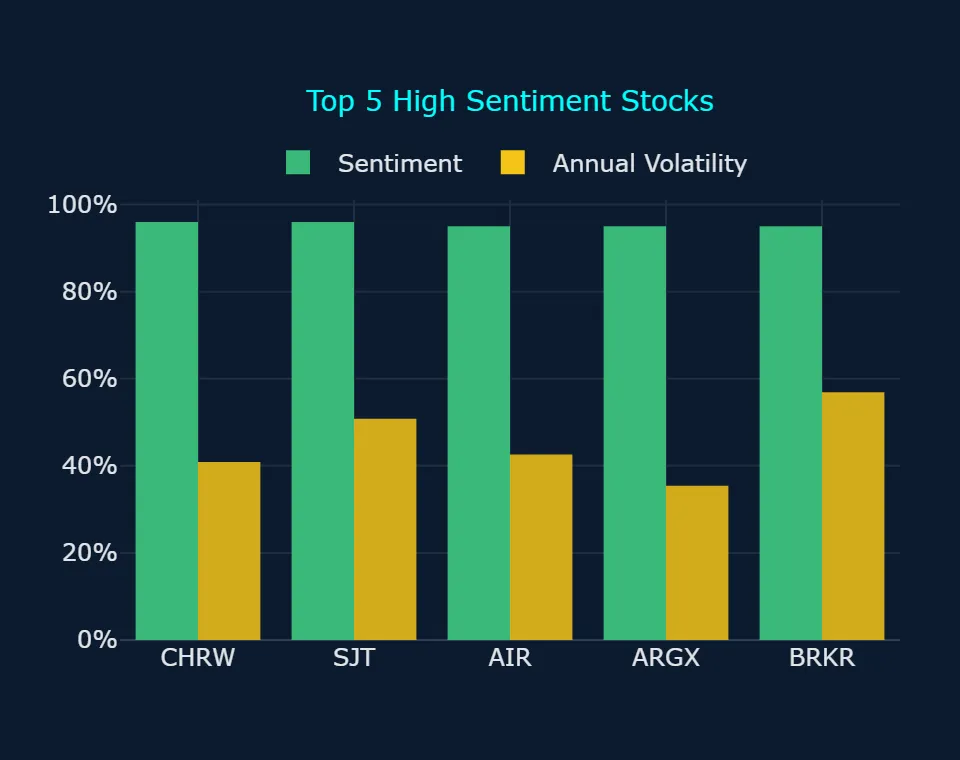
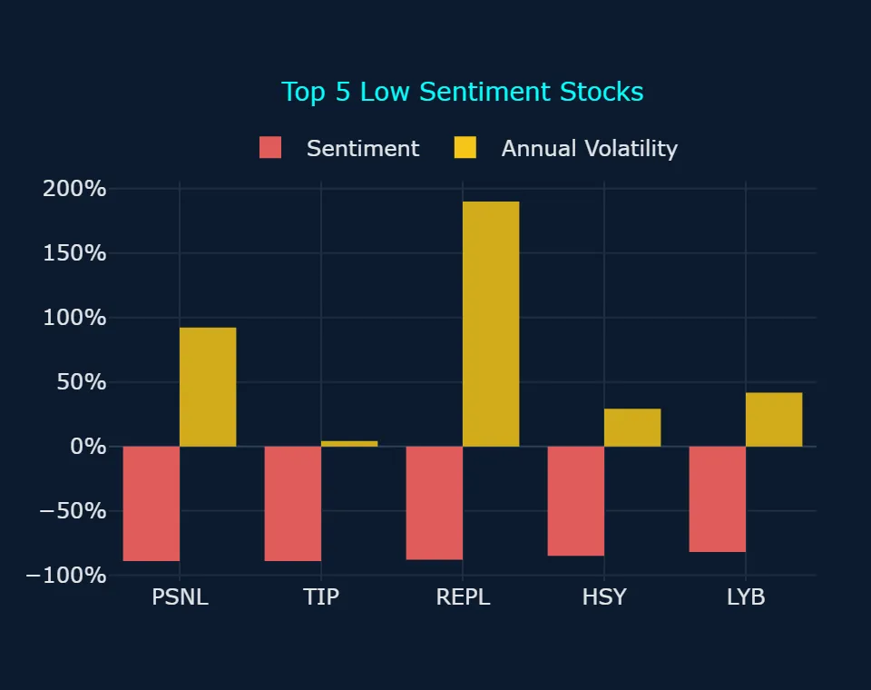
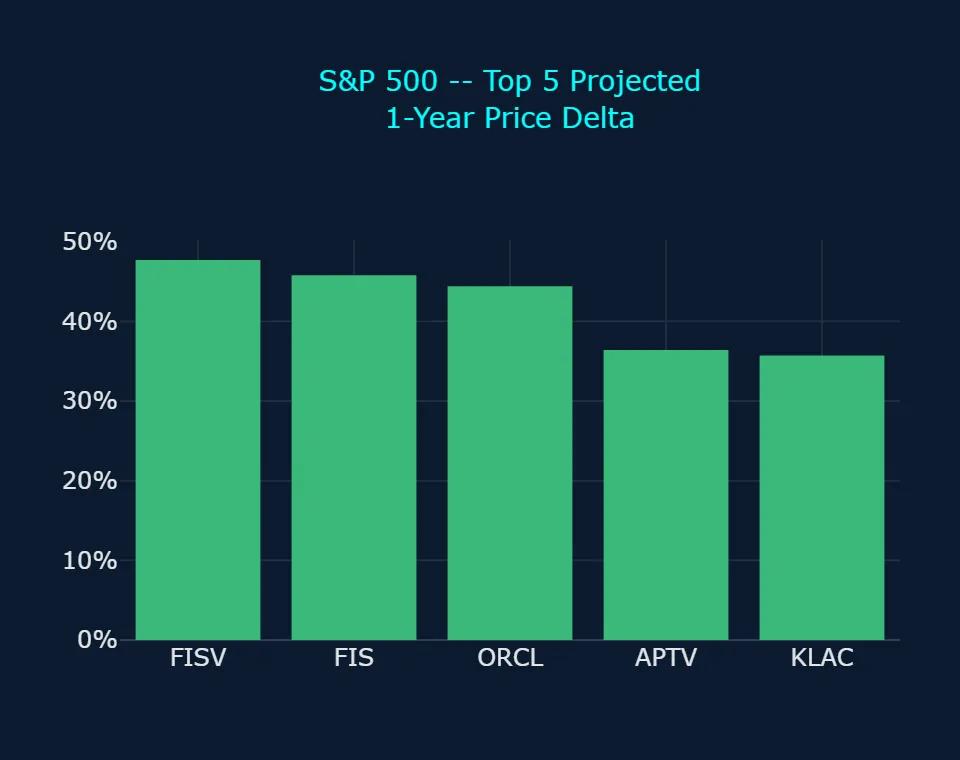
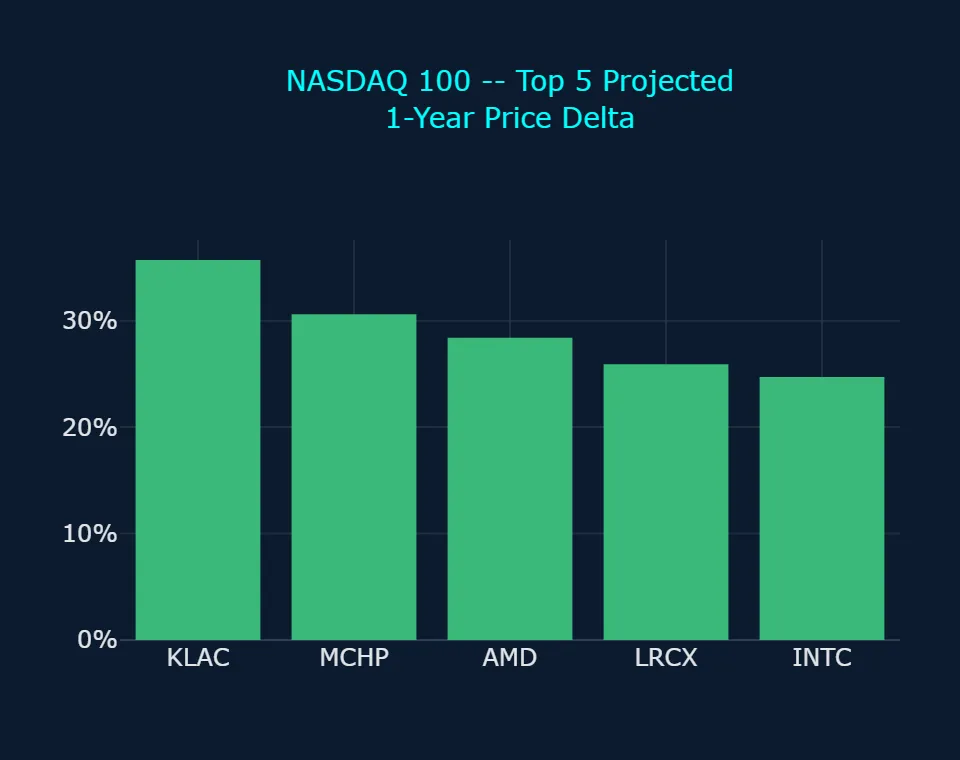
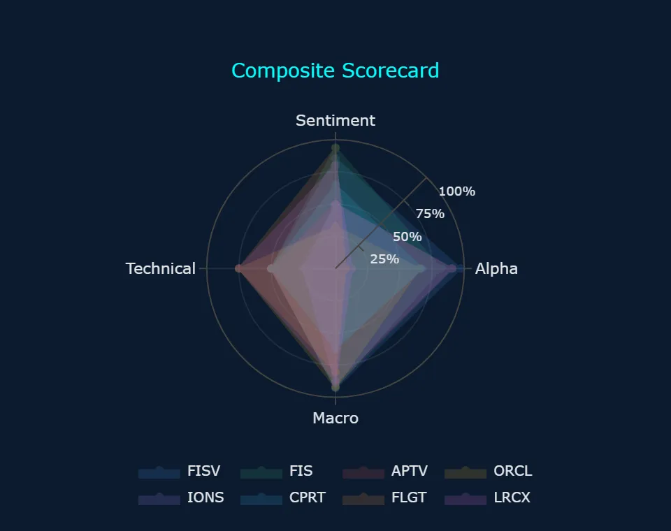
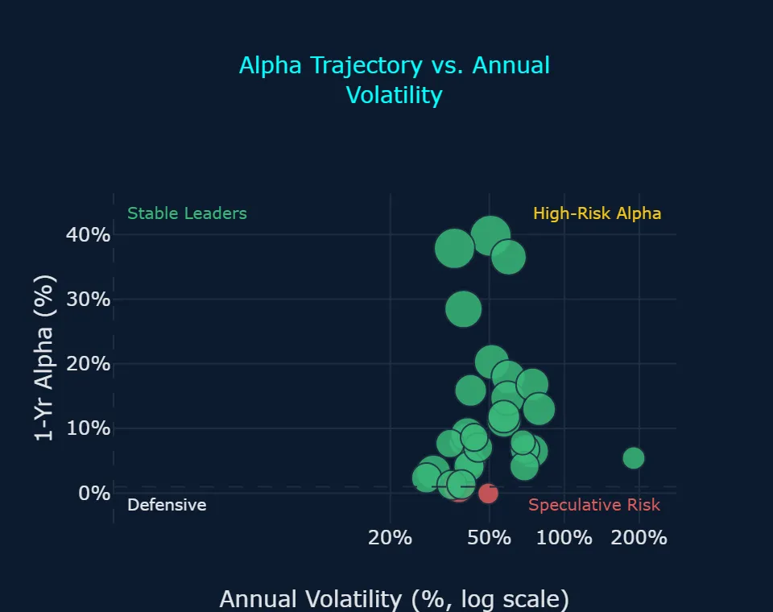
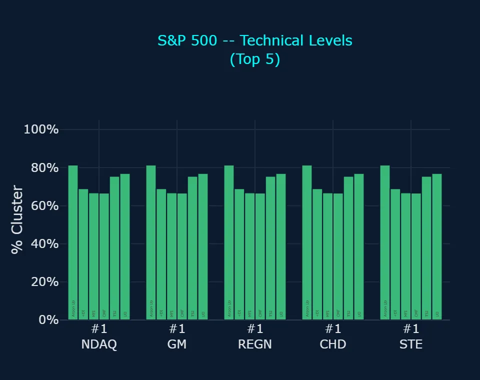
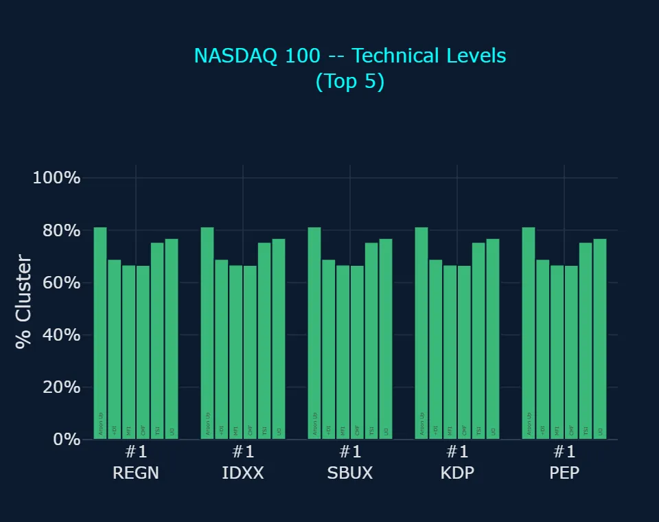
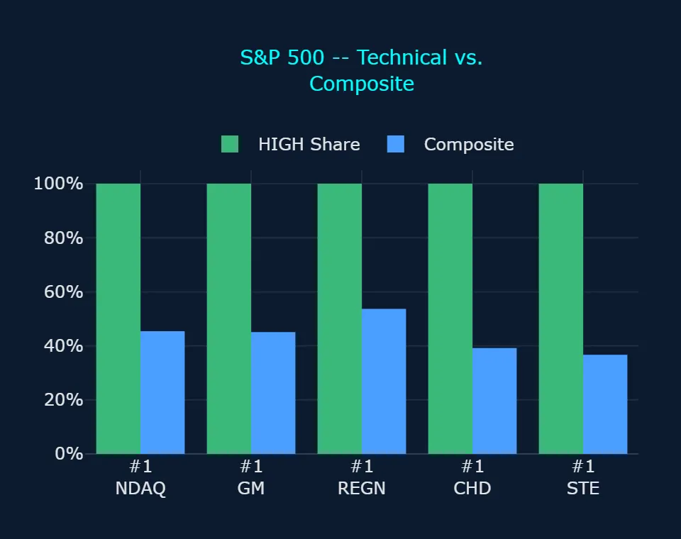
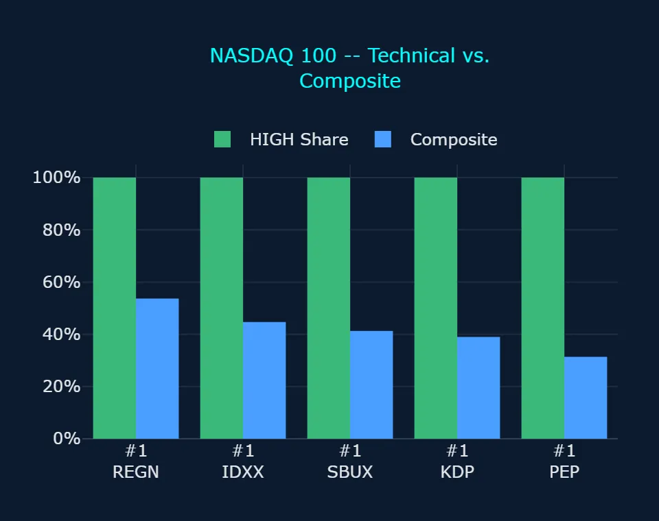

Zoonova AI: Pre-Market Quantitative Briefing – November 12, 2026
Session Quantitative Briefing: The Zoonova AI Intelligence Engine executes a hybrid architecture combining a proprietary Quad-Ensemble machine learning framework with Google Gemini Flash for real-time contextual synthesis and semantic macroeconomic grounding. The quantitative pipeline integrates four specialized estimators: Random Forest Regressor (RFR) for baseline structural stability, eXtreme Gradient Boosting (XGB) optimized for residual loss minimization, Categorical Boosting (CAT) for high-cardinality categorical signal processing, and Temporal Fusion Transformer (TFT) for multi-horizon price and volatility forecasting.
Zoonova AI: Pre-Market Momentum & Liquidity Report
1. QUANTITATIVE MODEL OVERVIEW & SIGNAL METRICS
Macro regime and security forecasts are powered by Zoonova's Quad-Ensemble (Random Forest Regressor [RFR], eXtreme Gradient Boosting [XGB], Categorical Boosting [CAT], and Temporal Fusion Transformer [TFT]) for price targets and alpha probability; VADER for sentiment scoring; BIRCH clustering for anomaly detection and macro breadth modeling. Together, these systems model underlying cross-asset momentum, predictive benchmark dispersion, and structural regime shifts.
- Benchmark dispersion highlights divergent growth profiles: SPDR S&P 500 ETF Trust (SPY) closed at $759.81 with -57.0% sentiment and a 1-year target of $819.99 (+7.9% implied gain), while Invesco QQQ Trust Series 1 (QQQ) closed at $690.38 with +54.0% sentiment, an annualized volatility of 22.64%, and a 1-year target of $800.36 (+15.9% implied gain, 1-year alpha of +8.01%) (Zoonova, 2026-11-11).
- Defensive and industrial benchmarks demonstrate subdued upside potential: SPDR Dow Jones Industrial Average ETF (DIA) closed at $524.44 with neutral 0.0% sentiment, an annualized volatility of 15.19%, and a projected 1-year target of $545.41 (+4.0% implied gain, 1-year alpha of -3.92%), trailing the broader equity complex (Zoonova, 2026-11-11).
- Fixed income and store-of-value assets project conservative trajectories: Vanguard Total Bond Market ETF (BND) closed at $71.10 with an annualized volatility of 4.39% and a 1-year target of $75.83 (+6.7% implied gain), while SPDR Gold Shares ETF (GLD) closed at $365.17 with +46.0% sentiment and a 1-year target of $383.01 (+4.9% implied gain, 1-year alpha of -3.03%) (Zoonova, 2026-11-11).
- Mega-cap tech equities display subdued alpha profiles relative to benchmark index projections: Apple Inc (AAPL) and Amazon.com Inc (AMZN) closed at $355.63 and $266.17 respectively, both carrying 0.0% sentiment, with 1-year targets of $372.48 (+4.8%) and $282.21 (+6.0%), while Alphabet Inc (GOOGL) registered -44.0% sentiment with a 1-year target of $318.87 (+8.7%) (Zoonova, 2026-11-11).
2. SENTIMENT INSIGHTS – TOP 5 HIGH & LOW
Top 5 High Sentiment Stocks
| Ticker | Company Name | Sentiment Score | Primary Catalyst / Driver |
|---|---|---|---|
| CHRW | C.H. Robinson Worldwide, Inc. | +96.0% | C.H. Robinson Worldwide logged +96.0% sentiment following an earnings beat driven by operational Lean AI deployments and an expanded quarterly dividend (Zacks, 2026-11-11). |
| SJT | San Juan Basin Royalty Trust | +96.0% | San Juan Basin Royalty Trust sustained +96.0% sentiment despite omitting its monthly distribution due to cumulative excess drilling costs and suppressed natural gas realizations (PR Newswire, 2026-10-20). |
| AIR | AAR Corp. | +95.0% | AAR Corp. registered +95.0% sentiment after securing a multi-year commercial radome maintenance and repair contract with Airbus Avionics (AAR CORP., 2026-11-09). |
| ARGX | Argen X SE | +95.0% | Argen X SE captured +95.0% sentiment on 54% year-over-year commercial product revenue growth and an agreement to acquire Unnatural Products for up to $1.15 billion (BioSpace, 2026-11-09). |
| BRKR | Bruker Corp | +95.0% | Bruker Corp posted +95.0% sentiment following third-quarter non-GAAP earnings that beat expectations alongside a book-to-bill ratio persisting above 1.0 (TipRanks, 2026-11-05). |
Top 5 Low Sentiment Stocks
| Ticker | Company Name | Sentiment Score | Primary Friction / Risk Factor |
|---|---|---|---|
| PSNL | Personalis Inc | -89.0% | Personalis Inc recorded -89.0% sentiment as third-quarter net losses widened to $33.8 million while its equity valuation remained anchored near the $16.25-per-share Tempus AI merger price (Stock Titan, 2026-11-04). |
| TIP* | iShares TIPS Bond ETF | -89.0% | iShares TIPS Bond ETF registered -89.0% sentiment as softening inflation expectations and shifting real yields reduced market appetite for inflation-hedging debt instruments (Tipswatch.com, 2026-11-03). |
| REPL | Replimune Group Inc | -88.0% | Replimune Group Inc dropped to -88.0% sentiment under the burden of commercial launch costs for TUDRIQEV and executive insider share sales (MarketBeat, 2026-11-11). |
| HSY | Hershey Company | -85.0% | The Hershey Company faced -85.0% sentiment amid consumer volume elasticity pressures and major domestic manufacturing investments announced by category competitors (Barchart, 2026-10-28). |
| LYB | LyondellBasell Industries NV | -82.0% | LyondellBasell Industries NV saw sentiment plunge to -82.0% after quarterly revenues and adjusted operating earnings lagged consensus targets amid European petrochemical demand weakness (MarketBeat, 2026-11-11). |
* ETF (exchange-traded fund)
3. ALPHA PROBABILITY & PRICE DELTA LEADERBOARD – 1-YEAR HORIZON
S&P 500 – Top 5 High Alpha Probability (1yr)
| Ticker | Current Price ($) | 1-Yr Target Price ($) | Alpha Probability (%) | Implied Excess Alpha (%) | 10%+ Alpha? |
|---|---|---|---|---|---|
| FISV | $63.90 | $94.39 | 90.41% | 39.79% | Both Yes |
| APTV | $39.41 | $53.75 | 84.57% | 28.47% | Both Yes |
| FIS | $30.21 | $44.04 | 76.23% | 37.85% | Both Yes |
| CSGP | $30.27 | $37.46 | 68.58% | 15.87% | Both Yes |
| HBAN | $15.88 | $17.51 | 63.00% | 2.31% | Split |
S&P 500 – Top 5 Price Delta + % Change (1yr)
| Ticker | Current Price ($) | 1-Yr Target Price ($) | Absolute Delta ($) | Projected 1-Yr % Change (%) | Implied Excess Alpha (%) |
|---|---|---|---|---|---|
| FISV | $63.90 | $94.39 | $30.49 | 47.72% | 39.79% |
| FIS | $30.21 | $44.04 | $13.83 | 45.78% | 37.85% |
| ORCL | $128.38 | $185.39 | $57.01 | 44.41% | 36.49% |
| APTV | $39.41 | $53.75 | $14.34 | 36.39% | 28.47% |
| KLAC | $161.01 | $218.49 | $57.48 | 35.70% | 27.78% |
NASDAQ 100 – Top 5 High Alpha Probability (1yr)
| Ticker | Current Price ($) | 1-Yr Target Price ($) | Alpha Probability (%) | Implied Excess Alpha (%) | 10%+ Alpha? |
|---|---|---|---|---|---|
| PYPL | $59.48 | $69.02 | 62.68% | 8.13% | Split |
| CPRT | $32.17 | $35.75 | 62.62% | 3.23% | Split |
| PDD | $79.01 | $86.32 | 45.10% | 1.32% | Both No |
| DXCM | $80.34 | $90.69 | 27.44% | 4.95% | Both No |
| NFLX | $64.54 | $74.59 | 15.14% | 7.65% | Both No |
NASDAQ 100 – Top 5 Price Delta + % Change (1yr)
| Ticker | Current Price ($) | 1-Yr Target Price ($) | Absolute Delta ($) | Projected 1-Yr % Change (%) | Implied Excess Alpha (%) |
|---|---|---|---|---|---|
| KLAC | $161.01 | $218.49 | $57.48 | 35.70% | 27.78% |
| MCHP | $62.13 | $81.15 | $19.02 | 30.61% | 22.68% |
| AMD | $552.90 | $709.88 | $156.98 | 28.39% | 20.47% |
| LRCX | $235.88 | $296.92 | $61.04 | 25.88% | 17.96% |
| INTC | $62.50 | $77.94 | $15.44 | 24.70% | 16.79% |
4. REAL-TIME CONTEXTUAL ENRICHMENT
Through the 2026-11-12 market session, broader equity sentiment displays notable sector bifurcation. Top sentiment names like C.H. Robinson Worldwide, Inc. (+96.0% sentiment) and Argen X SE (+95.0% sentiment) benefit from idiosyncratic fundamental execution, including proprietary automation rollouts and strategic clinical pipeline expansion (Zacks, 2026-11-11; BioSpace, 2026-11-09). Conversely, cyclicals and consumer defensive bellwethers such as LyondellBasell Industries NV (-82.0% sentiment) and The Hershey Company (-85.0% sentiment) remain pressured by soft industrial volumes and price elasticity resistance (MarketBeat, 2026-11-11; Barchart, 2026-10-28). Fixed income indicators reflect easing inflation risk premiums, with iShares TIPS Bond ETF recording -89.0% sentiment as investors reprice interest rate trajectories and duration exposures (Tipswatch.com, 2026-11-03).
In the benchmark alpha probability space, enterprise fintech and intelligent mobility suppliers lead predictive scoring. In the Main Scorecard, Fiserv, Inc. holds the top Composite score of 81.5, supported by an Alpha Rating of 97.0, a Macro Alignment of 92.8, a 90.41% Probability of 1y Alpha + 10%, and a projected 1-year target of $94.39 compared to its $63.90 close, with both models expecting it to beat the benchmark by 10%+ (Zoonova, 2026-11-11). This outlook aligns with Fiserv's reaffirmed full-year operating guidance, $500 million share repurchase program, and expanding payments footprint (Fiserv Investor Relations, 2026-11-03). Similarly, Aptiv PLC holds a Composite of 70.5 with an Alpha Rating of 90.7, a Macro Alignment of 91.3, an 84.57% Probability of 1y Alpha + 10%, and a projected 1-year target of $53.75 versus its $39.41 close, where both models expect 10%+ outperformance, supported by record non-automotive revenue expansion (APTV Earnings Release, 2026-11-03).
Systemic breadth modeling reveals a pronounced rotation toward semiconductor and hardware infrastructure. In anomaly clustering, bullish alerts vastly outpace bearish signals by 32 to 8. Bullish alerts include 6 stocks at moderate severity (Advanced Micro Devices Inc., Arista Networks Inc, Monolithic Power System Inc, Micron Technology Inc., Seagate Technology Holdings Plc, and Western Digital Corp.) confirming concurrent 3-day and 1-week trend shifts, alongside 26 names (25 stocks, 1 ETF) at low severity, including semiconductor leaders like Applied Materials Inc., KLA Corp., and Lam Research Corp. (Zoonova, 2026-11-11). Conversely, mega-cap tech holdings on the Tech Stock Scorecard reveal low alpha signals, with Apple Inc and Microsoft Corporation posting Alpha Ratings of 1.3 and 0.2, and Composite scores of 27.3 and 21.0, where neither model expects 10%+ outperformance, confirming capital rotation away from passive mega-cap exposure into specialized industrial and hardware suppliers.
5. ANOMALY DETECTION SCANNER
Direction: Bearish
Moderate Severity (1 stock)
- RVMD – Revolution Medicines Inc: Bearish Short-Term (3d) Trend Anomaly, Bearish Long-Term (1w) Trend Anomaly
Low Severity (7 stocks)
- ARWR – Arrowhead Pharmaceuticals Inc.: Bearish Long-Term (1w) Trend Anomaly
- COGT – Cogent Biosciences Inc: Bearish Short-Term (3d) Trend Anomaly
- HALO – Halozyme Therapeutics Inc.: Bearish Long-Term (1w) Trend Anomaly
- IONS – Ionis Pharmaceuticals Inc: Bearish Long-Term (1w) Trend Anomaly
- NTRA – Natera Inc: Bearish Long-Term (1w) Trend Anomaly
- PBYI – Puma Biotechnology Inc: Bearish Long-Term (1w) Trend Anomaly
- TWST – Twist Bioscience Corp: Bearish Short-Term (3d) Trend Anomaly
Direction: Bullish
Moderate Severity (6 stocks)
- AMD – Advanced Micro Devices Inc.: Bullish Short-Term (3d) Trend Anomaly, Bullish Long-Term (1w) Trend Anomaly
- ANET – Arista Networks Inc: Bullish Short-Term (3d) Trend Anomaly, Bullish Long-Term (1w) Trend Anomaly
- MPWR – Monolithic Power System Inc: Bullish Short-Term (3d) Trend Anomaly, Bullish Long-Term (1w) Trend Anomaly
- MU – Micron Technology Inc.: Bullish Short-Term (3d) Trend Anomaly, Bullish Long-Term (1w) Trend Anomaly
- STX – Seagate Technology Holdings Plc: Bullish Short-Term (3d) Trend Anomaly, Bullish Long-Term (1w) Trend Anomaly
- WDC – Western Digital Corp.: Bullish Short-Term (3d) Trend Anomaly, Bullish Long-Term (1w) Trend Anomaly
Low Severity (26 names: 25 stocks, 1 ETF)
- ADI – Analog Devices Inc.: Bullish Short-Term (3d) Trend Anomaly
- AMAT – Applied Materials Inc.: Bullish Short-Term (3d) Trend Anomaly
- AXSM – Axsome Therapeutics Inc: Bullish Short-Term (3d) Trend Anomaly
- FLGT – Fulgent Genetics Inc: Bullish Long-Term (1w) Trend Anomaly
- GLW – Corning, Inc.: Bullish Short-Term (3d) Trend Anomaly
- HPE – Hewlett Packard Enterprise Co: Bullish Short-Term (3d) Trend Anomaly
- IMVT – Immunovant Inc: Bullish Long-Term (1w) Trend Anomaly
- INSM – Insmed Inc: Bullish Long-Term (1w) Trend Anomaly
- INTC – Intel Corp.: Bullish Short-Term (3d) Trend Anomaly
- KEYS – Keysight Technologies Inc: Bullish Short-Term (3d) Trend Anomaly
- KLAC – KLA Corp.: Bullish Short-Term (3d) Trend Anomaly
- LRCX – Lam Research Corp.: Bullish Short-Term (3d) Trend Anomaly
- MPC – Marathon Petroleum Corp: Bullish Short-Term (3d) Trend Anomaly
- MRVL – Marvell Technology Inc: Bullish Short-Term (3d) Trend Anomaly
- NET – Cloudflare Inc: Bullish Long-Term (1w) Trend Anomaly
- NTAP – Netapp Inc: Bullish Short-Term (3d) Trend Anomaly
- ORCL – Oracle Corp.: Bullish Short-Term (3d) Trend Anomaly
- PSX – Phillips 66: Bullish Short-Term (3d) Trend Anomaly
- PWR – Quanta Services, Inc.: Bullish Short-Term (3d) Trend Anomaly
- REGN – Regeneron Pharmaceuticals, Inc.: Bullish Short-Term (3d) Trend Anomaly
- TER – Teradyne, Inc.: Bullish Short-Term (3d) Trend Anomaly
- TTWO – Take-Two Interactive Software, Inc.: Bullish Long-Term (1w) Trend Anomaly
- URI – United Rentals, Inc.: Bullish Short-Term (3d) Trend Anomaly
- VLO – Valero Energy Corp.: Bullish Short-Term (3d) Trend Anomaly
- VLUE* – iShares MSCI USA Value Factor ETF: Bullish Short-Term (3d) Trend Anomaly
- XNCR – Xencor Inc: Bullish Long-Term (1w) Trend Anomaly
* ETF (exchange-traded fund)
6. STRATEGIC INVESTMENT ASSESSMENT
- Overweight high-composite fintech infrastructure: Fiserv, Inc. (Composite 81.5, Alpha Rating 97.0, Macro Alignment 92.8) and Fidelity National Information Services, Inc. (Composite 79.0, Alpha Rating 81.8, Macro Alignment 92.6) represent the highest ranked setups in the Main Scorecard, where both models expect them to beat the benchmark by 10%+ (Zoonova, 2026-11-11).
- Capitalize on institutional semiconductor momentum: Anomaly detection confirmed 6 stocks with concurrent 3-day and 1-week bullish trend anomalies, led by Micron Technology Inc. (Technical Signal 100.0, Composite 59.4) and Western Digital Corp. (Technical Signal 100.0, Composite 47.0), underscoring robust capital flow into memory and data infrastructure (Zoonova, 2026-11-11).
- Underweight mega-cap index concentration: The Tech Stock Scorecard demonstrates compressing alpha across mega-cap stalwarts, with Microsoft Corporation (Composite 21.0, Alpha Rating 0.2) and Apple Inc (Composite 27.3, Alpha Rating 1.3) scoring at the bottom of the table, where neither model expects 10%+ benchmark outperformance (Zoonova, 2026-11-11).
- Avoid low-sentiment cyclical assets: LyondellBasell Industries NV (Sentiment -82.0%, annualized volatility 41.67%) and Personalis Inc (Sentiment -89.0%, annualized volatility 92.30%) exhibit deteriorating operational signals, capped transaction valuations, and structural demand headwinds, warranting reduced exposure (Zoonova, 2026-11-11).
7. STOCK SCORECARD
Main Scorecard
| Ticker | Composite (%) | Alpha Rating | 10%+ Alpha? | Projected 1-Yr Change (%) | Street Consensus (Upside) | Next Earnings | Sentiment Rating | Technical Signal | Macro Alignment | Anomaly Flag | Catalyst / Risk | Market Cap | EPS Revisions (30d) | Short Interest / DTC | Options Flow | Earnings Surprise (4Q) | Bias |
|---|---|---|---|---|---|---|---|---|---|---|---|---|---|---|---|---|---|
| FISV | 81.5% | 97.0 | Both Yes | +47.7% | Hold (+1.0%) | 2027-02-09 | 85.5 | 50.0 | 92.8 | None | Clover Platform Expansion | $33.7B | Downward (-1.8%) | 2.4% / 2.3 DTC | Neutral / Mixed | 2/4 Beats | Bullish |
| FIS | 79.0% | 81.8 | Both Yes | +45.8% | Hold (+38.2%) | 2027-02-22 | 94.0 | 50.0 | 92.6 | None | Lowered Guidance Overhang | $14.8B | Downward (-5.6%) | 3.4% / 2.8 DTC | Bearish (Put Heavy) | 3/4 Beats | Bullish |
| APTV | 70.5% | 90.7 | Both Yes | +36.4% | Buy (+52.0%) | 2027-02-04 | 50.0 | 50.0 | 91.3 | None | Automotive Bookings Acceleration | $8.0B | Downward (-3.5%) | 5.2% / 3.9 DTC | Neutral / Mixed | 4/4 Beats | Bullish |
| ORCL | 65.0% | 65.4 | Both Yes | +44.4% | Buy (+88.9%) | 2026-12-14 (in 32d) | 32.5 | 75.0 | 92.3 | Bullish (3d) | Cloud Infrastructure Backlog | $396.0B | Upward (+4.5%) | 2.6% / 2.1 DTC | Bullish (Call Skew) | 4/4 Beats | Bearish |
| IONS | 63.6% | 90.2 | Both Yes | +28.2% | Buy (+158.5%) | 2027-02-24 | 50.0 | 25.0 | 88.8 | Bearish (1w) | Dawnzera Commercial Ramp | $4.7B | Downward (-7.4%) | 7.9% / 4.8 DTC | Bearish (Put Heavy) | 3/4 Beats | Neutral |
| FLGT | 60.4% | 7.5 | Split | +19.2% | Hold (-2.7%) | 2027-02-26 | 93.5 | 75.0 | 80.3 | Bullish (1w) | Specialty Diagnostics Recovery | $554.0M | Downward (-3.8%) | 8.4% / 5.2 DTC | Neutral / Mixed | 2/4 Beats | Neutral |
| LRCX | 60.1% | 12.6 | Split | +25.9% | Strong Buy (+55.0%) | 2027-01-27 | 80.5 | 75.0 | 87.1 | Bullish (3d) | Wafer Fab Recovery | $250.8B | Upward (+3.4%) | 2.7% / 2.2 DTC | Bullish (Call Skew) | 4/4 Beats | Neutral |
| GLW | 60.0% | 39.9 | Split | +22.6% | Buy (+11.2%) | 2027-01-26 | 50.0 | 75.0 | 84.0 | Bullish (3d) | Optical Connectivity Surge | $102.0B | Upward (+4.1%) | 2.2% / 1.8 DTC | Bullish (Call Skew) | 4/4 Beats | Neutral |
| CHRW | 59.4% | 23.3 | Both No | +17.0% | Buy (+42.8%) | 2027-01-27 | 98.0 | 50.0 | 76.8 | None | Freight Brokerage Expansion | $14.5B | Upward (+0.8%) | 6.8% / 4.2 DTC | Neutral / Mixed | 4/4 Beats | Neutral |
| MU | 59.4% | 10.8 | Both No | +14.4% | Buy (+92.5%) | 2026-12-23 (in 41d) | 68.0 | 100.0 | 70.9 | Bullish (3d/1w) | High Bandwidth Memory | $780.7B | Upward (+13.3%) | 2.5% / 1.6 DTC | Bullish (Call Skew) | 4/4 Beats (+6.5% avg) | Neutral |
| INTC | 57.3% | 9.7 | Split | +24.7% | Hold (+45.7%) | 2027-01-28 | 74.0 | 75.0 | 85.7 | Bullish (3d) | Data Center Demand | $299.1B | Downward (-4.2%) | 3.6% / 2.7 DTC | Neutral / Mixed | 4/4 Beats | Neutral |
| MRVL | 57.1% | 11.9 | Split | +20.9% | Buy (+77.8%) | 2026-11-26 (in 14d) | 73.0 | 75.0 | 82.6 | Bullish (3d) | Optical Interconnect Growth | $123.8B | Upward (+2.8%) | 3.3% / 2.1 DTC | Bullish (Call Skew) | 4/4 Beats | Neutral |
| CSGP | 54.6% | 73.6 | Both Yes | +23.8% | Hold (+24.3%) | 2027-02-23 | 12.0 | 50.0 | 85.1 | None | Sales Workforce Reorganization | $12.2B | Downward (-2.7%) | 4.5% / 3.2 DTC | Neutral / Mixed | 4/4 Beats | Bearish |
| INSM | 54.5% | 11.9 | Split | +19.7% | Buy (+57.8%) | 2027-02-25 | 63.5 | 75.0 | 81.3 | Bullish (1w) | Brinsupri Launch Momentum | $26.2B | Upward (+8.4%) | 6.1% / 4.5 DTC | Bullish (Call Skew) | 3/4 Beats | Neutral |
| REGN | 53.7% | 6.1 | Both No | +8.8% | Buy (-6.3%) | 2027-01-29 | 95.0 | 75.0 | 46.8 | Bullish (3d) | Patent Hearing Milestone | $99.3B | Upward (+5.2%) | 1.8% / 2.1 DTC | Bullish (Call Skew) | 4/4 Beats | Neutral |
| KEYS | 49.9% | 5.7 | Both No | +12.0% | Strong Buy (+36.8%) | 2026-11-19 (in 7d) | 67.0 | 75.0 | 63.7 | Bullish (3d) | Test Equipment Demand | $52.0B | Upward (+3.2%) | 2.8% / 2.5 DTC | Neutral / Mixed | 4/4 Beats (+15.1% avg) | Neutral |
| HBAN | 49.0% | 67.6 | Split | +10.3% | Buy (+17.6%) | 2027-01-20 | 19.0 | 50.0 | 57.2 | None | Southeast Regional Integration | $30.8B | Neutral/Flat (0.0%) | 2.3% / 2.0 DTC | Neutral / Mixed | 3/4 Beats | Bearish |
| ARGX | 48.2% | 4.5 | Both No | +9.2% | Buy (+17.4%) | 2027-02-25 | 97.5 | 50.0 | 49.9 | None | Vyvgart Pipeline Expansion | $60.7B | Upward (+4.2%) | 2.1% / 2.5 DTC | Bullish (Call Skew) | 4/4 Beats | Neutral |
| WDC | 47.0% | 8.4 | Both No | +14.7% | Buy (+88.6%) | 2027-01-22 | 20.5 | 100.0 | 71.7 | Bullish (3d/1w) | Enterprise Storage Pricing | $117.2B | Upward (+6.8%) | 3.1% / 2.4 DTC | Bullish (Call Skew) | 4/4 Beats | Bearish |
| REPL | 29.3% | 5.4 | Both No | +13.3% | Buy (+7.1%) | 2027-02-02 | 6.0 | 50.0 | 68.2 | None | Accelerated Approval Progress | $2.2B | Upward (+3.1%) | 11.5% / 6.4 DTC | Bullish (Call Skew) | 3/4 Beats | Bearish |
10%+ Alpha? – whether Zoonova's two 1-year models (alpha probability and price target) expect the stock to beat the benchmark by 10%+. “Both No” is common: 10% is a high bar.
Tech Stock Scorecard
| Ticker | Composite (%) | Alpha Rating | 10%+ Alpha? | Projected 1-Yr Change (%) | Street Consensus (Upside) | Next Earnings | Sentiment Rating | Technical Signal | Macro Alignment | Anomaly Flag | Catalyst / Risk | Market Cap | EPS Revisions (30d) | Short Interest / DTC | Options Flow | Earnings Surprise (4Q) | Bias |
|---|---|---|---|---|---|---|---|---|---|---|---|---|---|---|---|---|---|
| INTC | 57.3% | 9.7 | Split | +24.7% | Hold (+45.7%) | 2027-01-28 | 74.0 | 75.0 | 85.7 | Bullish (3d) | Data Center Demand | $299.1B | Downward (-4.2%) | 3.6% / 2.7 DTC | Neutral / Mixed | 4/4 Beats | Neutral |
| AMD | 53.9% | 0.8 | Split | +28.4% | Buy (+18.2%) | 2027-02-02 | 43.5 | 100.0 | 89.1 | Bullish (3d/1w) | Server Processor Adoption | $834.1B | Upward (+8.2%) | 2.6% / 2.4 DTC | Bullish (Call Skew) | 4/4 Beats | Neutral |
| META | 39.7% | 10.6 | Both No | +16.9% | Buy (+36.7%) | 2027-01-26 | 35.0 | 50.0 | 76.6 | None | Muse Agent Monetization | $1.56T | Downward (-4.1%) | 1.4% / 2.2 DTC | Neutral / Mixed | 3/4 Beats | Bearish |
| TSLA | 38.8% | 2.7 | Both No | +8.3% | Hold (+5.4%) | 2027-01-27 | 68.0 | 50.0 | 42.3 | None | Robotaxi Fleet Expansion | $1.45T | Downward (-5.2%) | 3.2% / 2.9 DTC | Neutral / Mixed | 2/4 Beats | Bearish |
| AVGO | 38.6% | 2.3 | Both No | +12.1% | Buy (+51.8%) | 2026-12-09 (in 27d) | 50.0 | 50.0 | 64.4 | None | Custom Accelerator Demand | $1.65T | Upward (+4.8%) | 1.5% / 2.1 DTC | Bullish (Call Skew) | 4/4 Beats | Bearish |
| NVDA | 30.2% | 1.6 | Both No | +10.1% | Strong Buy (+81.2%) | 2026-11-17 (in 5d) | 23.5 | 50.0 | 56.7 | None | Blackwell Architecture Scaling | $5.27T | Upward (+6.2%) | 1.2% / 2.8 DTC | Bullish (Call Skew) | 4/4 Beats | Bearish |
| GOOGL | 29.9% | 4.7 | Both No | +8.7% | Buy (+35.7%) | 2027-02-02 | 28.0 | 50.0 | 45.2 | None | Gemini Cloud Integration | $3.62T | Downward (-2.3%) | 1.1% / 2.3 DTC | Bullish (Call Skew) | 3/4 Beats | Bearish |
| AMZN | 28.8% | 0.7 | Both No | +6.0% | Strong Buy (+22.9%) | 2027-02-04 | 50.0 | 50.0 | 18.2 | None | Trainium Infrastructure Deployment | $2.93T | Upward (+1.7%) | 1.0% / 2.0 DTC | Bullish (Call Skew) | 3/4 Beats | Bearish |
| AAPL | 27.3% | 1.3 | Both No | +4.7% | Buy (-2.4%) | 2027-01-28 | 50.0 | 50.0 | 9.5 | None | Apple Intelligence Rollout | $4.94T | Downward (-1.5%) | 0.9% / 3.7 DTC | Neutral / Mixed | 4/4 Beats | Bearish |
| MSFT | 21.0% | 0.2 | Both No | +5.1% | Strong Buy (+22.1%) | 2027-01-26 | 23.5 | 50.0 | 12.7 | None | Azure Copilot Monetization | $3.87T | Upward (+3.5%) | 0.8% / 2.7 DTC | Bullish (Call Skew) | 4/4 Beats | Bearish |
| SPCX | N/H | N/H | N/A | N/A | Buy | 2027-02-25 | N/H | N/H | N/H | None | Starlink Neocloud Scaling | $1.90T | Upward (+5.0%) | 2.2% / 1.9 DTC | Bullish (Call Skew) | N/A (Recent IPO) | N/A |
N/H: no ML scores yet (insufficient trading history for the models).
Search-grounded columns (Street Consensus (Upside), Next Earnings, Catalyst / Risk, Market Cap, EPS Revisions (30d), Short Interest / DTC, Options Flow, Earnings Surprise (4Q)): MarketBeat, TipRanks, TradingView, Stock Analysis, Robinhood (sources dated 2026-11-10 to 2026-11-12).






Educational purposes only. Not investment advice.
Zoonova AI: Pre-Market Technical Analysis Report
S&P 500 breadth widens over NASDAQ 100 as top-ranked stocks post unanimous 6 of 6 HIGH indicators despite composite score divergence.
1. 6 CORE INDICATORS
Indicator levels (LOW / MEDIUM / HIGH) and % Cluster come from Zoonova's BIRCH model (Balanced Iterative Reducing and Clustering using Hierarchies), an unsupervised machine-learning clustering model used for pattern recognition. Each indicator is clustered across the stock universe; % Cluster is the centroid of the cluster a stock falls in.
| Indicator | Category | Role |
|---|---|---|
| ARUPAroon Up | Trend Direction | Recency of the highest high in the lookback window; collapses in bear markets, so HIGH means price keeps printing fresh swing highs. |
| +DIPositive Directional Indicator | Trend Direction | Upward directional movement relative to true range; unlike ADX it collapses in sell-offs, so HIGH confirms buyer-driven expansion. |
| MFIMoney Flow Index | Volume / Inflow | Volume-weighted RSI from 0 to 100; falls as money leaves on down days, so HIGH means inflow on up days outweighs outflow. |
| CMFChaikin Money Flow | Volume / Inflow | Close location within the bar weighted by volume; plunges negative in liquidation, so HIGH confirms sustained buying into the top of daily ranges. |
| TSITrue Strength Index | Momentum | Double-smoothed momentum from -100 to +100; deeply negative in downtrends, so HIGH shows consistent multi-period upward thrust. |
| UOUltimate Oscillator | Momentum | Buying pressure across 7-, 14- and 28-period windows from 0 to 100; sinks when closes sit near the lows, so HIGH means buyers are in control on every timeframe. |
2. TECHNICAL REGIME
| Index | Universe | All HIGH (6/6) | Avg HIGH | Aroon Up HIGH | +DI HIGH | MFI HIGH | CMF HIGH | TSI HIGH | UO HIGH |
|---|---|---|---|---|---|---|---|---|---|
| S&P 500 | 424 | 73 | 3.3/6 | 325 | 157 | 236 | 188 | 259 | 227 |
| NASDAQ 100 | 71 | 6 | 2.6/6 | 40 | 19 | 34 | 25 | 32 | 35 |
Across the S&P 500, technical participation is broad, featuring an average HIGH count of 3.3 and 73 stocks with all indicators HIGH out of 424 constituents, led by 325 members at HIGH in Aroon Up. In contrast, the NASDAQ 100 demonstrates narrower breadth with an average HIGH count of 2.6 and only 6 stocks with all indicators HIGH out of 71 constituents, constrained by directional movement where only 19 members reach HIGH in +DI.
3. TOP 5 BULLISH CONFLUENCE
Ranking: Rank = HIGH count (#1 = 6/6, #2 = 5/6, ...); within a rank, Sentiment (desc), then ticker. Sentiment only orders tickers within a rank; it is not a technical signal.
S&P 500 – Top 5 Bullish Confluence
| Rank | Ticker | Aroon Up | +DI | MFI | CMF | TSI | UO | HIGH | Sentiment |
|---|---|---|---|---|---|---|---|---|---|
| 1 | NDAQ | HIGH 81.4% | HIGH 69.0% | HIGH 66.8% | HIGH 66.7% | HIGH 75.5% | HIGH 77.0% | 6/6 | +94.0% |
| 1 | GM | HIGH 81.4% | HIGH 69.0% | HIGH 66.8% | HIGH 66.7% | HIGH 75.5% | HIGH 77.0% | 6/6 | +90.0% |
| 1 | REGN | HIGH 81.4% | HIGH 69.0% | HIGH 66.8% | HIGH 66.7% | HIGH 75.5% | HIGH 77.0% | 6/6 | +90.0% |
| 1 | CHD | HIGH 81.4% | HIGH 69.0% | HIGH 66.8% | HIGH 66.7% | HIGH 75.5% | HIGH 77.0% | 6/6 | +89.0% |
| 1 | STE | HIGH 81.4% | HIGH 69.0% | HIGH 66.8% | HIGH 66.7% | HIGH 75.5% | HIGH 77.0% | 6/6 | +88.0% |
S&P 500 – Signal Groups
| Rank | Ticker | Trend Direction | Volume / Inflow | Momentum |
|---|---|---|---|---|
| 1 | NDAQ | 2 of 2 HIGH | 2 of 2 HIGH | 2 of 2 HIGH |
| 1 | GM | 2 of 2 HIGH | 2 of 2 HIGH | 2 of 2 HIGH |
| 1 | REGN | 2 of 2 HIGH | 2 of 2 HIGH | 2 of 2 HIGH |
| 1 | CHD | 2 of 2 HIGH | 2 of 2 HIGH | 2 of 2 HIGH |
| 1 | STE | 2 of 2 HIGH | 2 of 2 HIGH | 2 of 2 HIGH |
NASDAQ 100 – Top 5 Bullish Confluence
| Rank | Ticker | Aroon Up | +DI | MFI | CMF | TSI | UO | HIGH | Sentiment |
|---|---|---|---|---|---|---|---|---|---|
| 1 | REGN | HIGH 81.4% | HIGH 69.0% | HIGH 66.8% | HIGH 66.7% | HIGH 75.5% | HIGH 77.0% | 6/6 | +90.0% |
| 1 | IDXX | HIGH 81.4% | HIGH 69.0% | HIGH 66.8% | HIGH 66.7% | HIGH 75.5% | HIGH 77.0% | 6/6 | +54.0% |
| 1 | SBUX | HIGH 81.4% | HIGH 69.0% | HIGH 66.8% | HIGH 66.7% | HIGH 75.5% | HIGH 77.0% | 6/6 | +40.0% |
| 1 | KDP | HIGH 81.4% | HIGH 69.0% | HIGH 66.8% | HIGH 66.7% | HIGH 75.5% | HIGH 77.0% | 6/6 | +34.0% |
| 1 | PEP | HIGH 81.4% | HIGH 69.0% | HIGH 66.8% | HIGH 66.7% | HIGH 75.5% | HIGH 77.0% | 6/6 | +23.0% |
NASDAQ 100 – Signal Groups
| Rank | Ticker | Trend Direction | Volume / Inflow | Momentum |
|---|---|---|---|---|
| 1 | REGN | 2 of 2 HIGH | 2 of 2 HIGH | 2 of 2 HIGH |
| 1 | IDXX | 2 of 2 HIGH | 2 of 2 HIGH | 2 of 2 HIGH |
| 1 | SBUX | 2 of 2 HIGH | 2 of 2 HIGH | 2 of 2 HIGH |
| 1 | KDP | 2 of 2 HIGH | 2 of 2 HIGH | 2 of 2 HIGH |
| 1 | PEP | 2 of 2 HIGH | 2 of 2 HIGH | 2 of 2 HIGH |
4. TICKER READS
S&P 500
- #1 NDAQ – 6 of 6 indicators sit at HIGH, exhibiting complete alignment across Trend Direction (2 of 2 HIGH), Volume / Inflow (2 of 2 HIGH), and Momentum (2 of 2 HIGH). Aroon Up and +DI confirm upward directional expansion, while MFI and CMF signal sustained capital inflows. The verdict is Mixed as an unflagged Technical Signal of 50.0 and Macro Alignment of 42.7 keep the Composite at 45.4 despite Sentiment at +94.0%. Watch: Decline in Aroon Up or CMF from HIGH cluster.
- #1 GM – 6 of 6 indicators reach HIGH, reflecting complete agreement across Trend Direction (2 of 2 HIGH), Volume / Inflow (2 of 2 HIGH), and Momentum (2 of 2 HIGH). Persistent buying into upper daily ranges is confirmed by HIGH levels in CMF and MFI alongside double-smoothed thrust in TSI. The verdict is Mixed as a Technical Signal of 50.0 and Macro Alignment of 43.8 yield a Composite of 45.1 alongside +90.0% Sentiment. Watch: Loss of HIGH status in +DI or TSI momentum.
- #1 REGN – 6 of 6 indicators are HIGH, supported by concurrent strength across Trend Direction (2 of 2 HIGH), Volume / Inflow (2 of 2 HIGH), and Momentum (2 of 2 HIGH). Buying pressure in UO and fresh swing highs in Aroon Up are reinforced by a Bullish Short-Term (3d) Trend Anomaly that lifts the Technical Signal to 75.0. The verdict is Mixed as an Alpha Rating of 6.1 and Macro Alignment of 46.8 anchor the Composite at 53.7. Watch: Resolution of the 3d trend anomaly or UO falling from HIGH.
- #1 CHD – 6 of 6 indicators register at HIGH, demonstrating synchronized top-tier clustering across Trend Direction (2 of 2 HIGH), Volume / Inflow (2 of 2 HIGH), and Momentum (2 of 2 HIGH). While Aroon Up, +DI, and TSI demonstrate robust directional momentum, the verdict is Divergent. The pristine technical structure conflicts with a Composite of 39.2, dragged down by an Alpha Rating of 0.1 and Macro Alignment of 15.3. Watch: Weakening in CMF or MFI volume inflow clusters.
- #1 STE – 6 of 6 indicators stand at HIGH, spanning full representation across Trend Direction (2 of 2 HIGH), Volume / Inflow (2 of 2 HIGH), and Momentum (2 of 2 HIGH). Both MFI and CMF reflect volume-weighted inflow, yet the verdict is Divergent against a Composite of 36.7. Subdued Macro Alignment of 3.2 and an Alpha Rating of 0.3 heavily offset the +88.0% Sentiment and technical strength. Watch: Drop below HIGH in Aroon Up or +DI trend indicators.
NASDAQ 100
- #1 REGN – 6 of 6 indicators are HIGH, supported by concurrent strength across Trend Direction (2 of 2 HIGH), Volume / Inflow (2 of 2 HIGH), and Momentum (2 of 2 HIGH). Buying pressure in UO and fresh swing highs in Aroon Up are reinforced by a Bullish Short-Term (3d) Trend Anomaly that lifts the Technical Signal to 75.0. The verdict is Mixed as an Alpha Rating of 6.1 and Macro Alignment of 46.8 anchor the Composite at 53.7. Watch: Resolution of the 3d trend anomaly or UO falling from HIGH.
- #1 IDXX – 6 of 6 indicators achieve HIGH, led by broad indicator participation across Trend Direction (2 of 2 HIGH), Volume / Inflow (2 of 2 HIGH), and Momentum (2 of 2 HIGH). Ultimate Oscillator and TSI establish multi-timeframe buyer control, but the verdict is Divergent due to a Composite of 44.7. Despite Macro Alignment of 61.9 and Sentiment at +54.0%, an Alpha Rating of 1.9 leaves the overall score below confirmation. Watch: Downturn in TSI or Ultimate Oscillator from HIGH.
- #1 SBUX – 6 of 6 indicators sit at HIGH, marked by complete clustering in Trend Direction (2 of 2 HIGH), Volume / Inflow (2 of 2 HIGH), and Momentum (2 of 2 HIGH). Persistent swing highs in Aroon Up and buyer expansion in +DI are present, yet the verdict is Divergent. A Composite of 41.3, constrained by an Alpha Rating of 0.1 and Sentiment at +40.0%, contrasts with the technical readings. Watch: Break in Aroon Up or CMF top-tier cluster readings.
- #1 KDP – 6 of 6 indicators reach HIGH, capturing upside expansion across Trend Direction (2 of 2 HIGH), Volume / Inflow (2 of 2 HIGH), and Momentum (2 of 2 HIGH). Capital accumulation in CMF and MFI confirms sustained buying, but the verdict is Divergent. The Composite reaches only 39.0, weighed down by an Alpha Rating of 1.1 and modest Sentiment of +34.0%. Watch: Outflow signaled by CMF or MFI dropping from HIGH.
- #1 PEP – 6 of 6 indicators register at HIGH, placing in the top cluster across Trend Direction (2 of 2 HIGH), Volume / Inflow (2 of 2 HIGH), and Momentum (2 of 2 HIGH). While Aroon Up and TSI display strong multi-period trend structure, the verdict is Divergent as the Composite stands at 31.4. Low Macro Alignment of 17.5, an Alpha Rating of 0.2, and Sentiment at +23.0% undercut the unanimous technical strength. Watch: Loss of HIGH cluster in Aroon Up or Ultimate Oscillator.
5. TECHNICAL VS. COMPOSITE MODEL CHECK
Composite is the Zoonova Scorecard (0-100), normalized across the full universe: 30% Alpha (1-year probability of beating the benchmark by 10%+), 25% Sentiment, 25% Technical (bullish minus bearish anomaly flags; 50 = none) and 20% Macro (1-year alpha percentile).
Verdict: Confirmed = strong technicals (HIGH share 75% or more) with Composite 55 or more; Divergent = one strong and the other weak (strong technicals with Composite below 45, or weak technicals, HIGH share below 50%, with Composite 55 or more); Weak = both weak; otherwise Mixed.
S&P 500 – Technical vs. Composite
| Rank | Ticker | HIGH | Composite | Verdict |
|---|---|---|---|---|
| 1 | NDAQ | 6/6 | 45.4% | Mixed |
| 1 | GM | 6/6 | 45.1% | Mixed |
| 1 | REGN | 6/6 | 53.7% | Mixed |
| 1 | CHD | 6/6 | 39.2% | Divergent |
| 1 | STE | 6/6 | 36.7% | Divergent |
NASDAQ 100 – Technical vs. Composite
| Rank | Ticker | HIGH | Composite | Verdict |
|---|---|---|---|---|
| 1 | REGN | 6/6 | 53.7% | Mixed |
| 1 | IDXX | 6/6 | 44.7% | Divergent |
| 1 | SBUX | 6/6 | 41.3% | Divergent |
| 1 | KDP | 6/6 | 39.0% | Divergent |
| 1 | PEP | 6/6 | 31.4% | Divergent |
- CHD: Technicals show unanimous strength with 6 of 6 indicators HIGH, but the Composite is restricted to 39.2 by a 15.3 Macro Alignment and 0.1 Alpha Rating.
- STE: A 6 of 6 HIGH technical profile conflicts with a 36.7 Composite, depressed by a Macro Alignment of 3.2.
- IDXX: Flawless 6 of 6 HIGH indicator levels diverge from a Composite of 44.7, held back by an Alpha Rating of 1.9.
- SBUX: All 6 indicators reside at HIGH, but a low Alpha Rating of 0.1 and Sentiment of +40.0% hold the Composite to 41.3.
- KDP: Unanimous 6 of 6 HIGH indicator clustering diverges from a Composite of 39.0, limited by an Alpha Rating of 1.1 and Sentiment of +34.0%.
- PEP: Strong technicals across all 6 indicators at HIGH contrast with a weak Composite of 31.4, driven by Macro Alignment of 17.5 and Alpha Rating of 0.2.
6. TECHNICAL CONTEXT
- REGN – Zoonova registered a Bullish Short-Term (3d) Trend Anomaly, lifting the Technical Signal to 75.0. (Zoonova, 2026-11-11)
- GM – Nasdaq confirmed General Motors will transfer its listing to the Nasdaq Global Select Market on 2026-11-17. (Nasdaq Trader, 2026-11-09)
7. TECHNICAL ASSESSMENT
The technical posture across qualifying leaders is overwhelmingly constructive, evidenced by unanimous 6 of 6 HIGH readings across all evaluated trend, volume inflow, and momentum clusters. However, broader participation differs sharply between indexes, as the S&P 500 averages 3.3 HIGH indicators versus just 2.6 in the NASDAQ 100. The principal risk to this bullish posture is widespread composite divergence, where low Alpha Ratings and mixed Macro Alignment leave several top-ranked names susceptible should volume inflows falter.




Educational purposes only. Not investment advice.